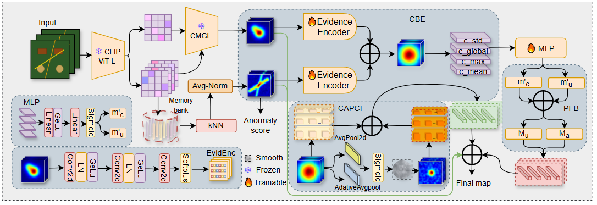
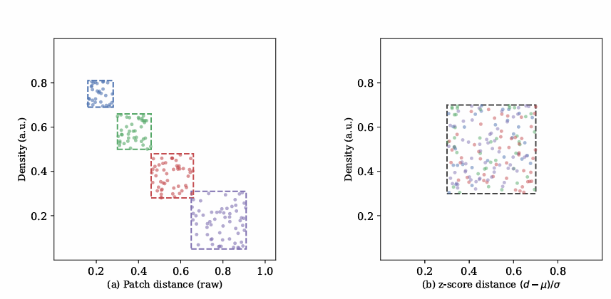
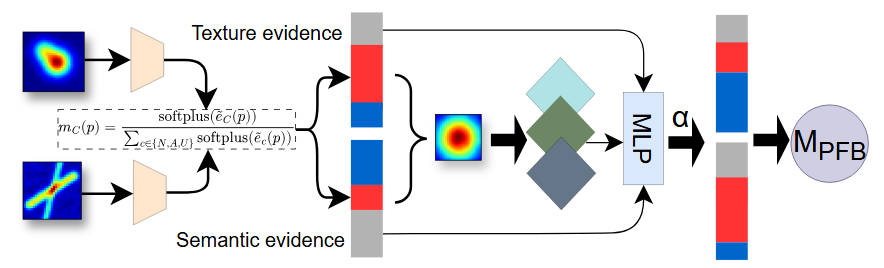
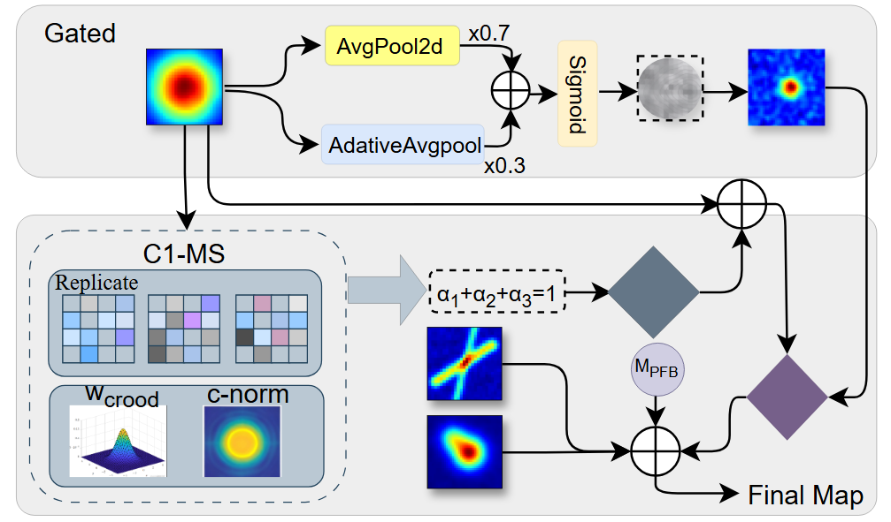

方法架构
问题定义
零样本工业异常检测要求在目标评测类别不使用任何正常或异常样本、不使用缺陷像素掩码的条件下，判断输入图像 I 是否存在未见异常，输出图像级异常分数 S(I) 与像素级异常图 P(I)。
模型只在外部辅助数据集上学习领域提示、特征投影与融合模块，辅助集与评测类别互不相交；评测目标类不参与任何训练或建模，异常样本及其像素掩码仅在评测时用于计算像素指标。
整体框架

推理链条自上而下分三段：冻结编码器抽取多尺度补丁特征后送入视觉、语义两条分支；两路异常图由 CBE 编码为三类证据并自适应折扣，再由 PFB 组合为融合证据与保守异常分；CAPGF 按像素冲突逐像素加权，输出最终像素图，并由融合响应聚合得到图像级分数。
双分支异常响应构造
视觉分支
视觉骨干取 ViT 第 6、12、18、24 层特征输出，第 l 层补丁特征记为 F_l(p)（p 为 37×37 网格位置）。浅层编码局部纹理与边缘，深层编码全局结构。各层特征经共享投影层映射到对比嵌入空间，与该层在辅助集上学到的领域文本原型计算相似度偏差，作为该层的视觉异常响应；本分支不构建面向目标类的正常样本记忆库。
为消除层间量纲差异，在正常参考样本上估计每层的距离均值与标准差，对距离做逐层 z-score 标准化：

标准化后按等权规则融合（L=4，无可训练参数）得到最终视觉（纹理）异常图：
T(p) = (1/4) * Σ_l ( d_l(p) − μ_l ) / σ_l
语义分支
语义分支由可学习领域提示封装层构成，提示参数在外部辅助集上学习，CLIP 视觉编码器冻结。领域提示生成"正常/异常"及工件属性文本嵌入，与逐位置视觉特征匹配，输出 37×37 语义异常响应图，表征该位置语义偏离正常的程度。该响应图直接作为语义分支证据使用。
联合证据估计与聚合

证据编码（CBE）
辨识框架为 {N, A, U}（正常、异常、不确定）。每个分支在像素 p 输出三个证据质量，满足 m_N + m_A + m_U = 1。
两路异常图分布差异较大，共享一套权重难以同时拟合，因此各配一个结构相同、参数独立的证据编码器：输入单通道异常图 → Conv 1→16 + LayerNorm + GELU → Conv 16→16 + LayerNorm + GELU → Conv 16→3 得到原始证据，经 softplus 非负激活后沿通道维 L1 归一化：
m_c(p) = softplus(ẽ_c(p)) / Σ_{k∈{N,A,U}} softplus(ẽ_k(p))
冲突度量与自适应折扣
两路证据在像素 p 的冲突度取相互对立项乘积之和：一方判正常、另一方判异常时冲突增大，意见一致时趋近于零。
单像素冲突易受孤立噪声干扰，故不取单点值，而取冲突图 K 的空间均值、标准差、最大值与平均不确定度组成四维冲突统计，经小型 MLP 与 Sigmoid 输出折扣系数 α。折扣把原证据按比例转移至不确定项：
m'_N = α·m_N, m'_A = α·m_A, m'_U = 1 − α·(m_N + m_A)
冲突越大 α 越小，越多质量转入不确定项。
证据聚合（PFB）
折扣后的视觉证据与语义证据在 PFB 中执行 Dempster 组合，输出融合后的正常、异常、不确定质量并再次归一化，保证三者之和为 1。组合后一致支持的状态相互强化；一方明确、另一方证据不足时保留明确判断；两路均无法判断时质量集中到不确定项。
像素异常分采用"异常证据 + 不确定证据加权"的保守形式：
s(p) = m_A(p) + λ·m_U(p), λ = 0.5
保留不确定项的正向贡献，使证据不足处不被压为低分、高冲突区也不被过度自信判为异常；不确定像素维持中等响应。
冲突感知像素门控融合（CAPGF）

纯证据组合在两路高度对立时仍可能给出偏高分数，因此需要一条位于聚合之外的回退路径。CAPGF 接收融合证据、冲突图 K 与两路原始响应，在像素粒度决定学习型结果的采纳程度。
局部—全局两级冲突统计：局部项取平均池化刻画邻域冲突趋势、保留细节；全局项自适应平均池化到低分辨率再双线性上采样回原分辨率，刻画整体分歧。两项按 0.7 与 0.3 加权。
门控系数由阈值 τ 与温度 T 经 Sigmoid 映射：
g(p) = sigmoid( (τ − c(p))·T )
τ 是"采用学习型证据融合还是退回等权融合"的判定阈值，T 控制曲线陡峭程度。门控图再以高斯核做空间平滑，避免椒盐状跳变。
C1-MS 多尺度上下文候选：在逐像素门控基础上，用邻域低冲突邻居的门控值修正当前像素。每个尺度先 replicate 填充并展开邻域，坐标权重按二维高斯衰减，冲突值先做 min-max 归一化再参与加权：
w(p,q) ∝ exp( −‖p−q‖² / (2σ²) ) · c_norm(q)^k, k = 2.0
窗口内取权重最大的若干邻居，其余置零后重新归一化，得该尺度的上下文候选门；三个尺度候选按权重融合为多尺度上下文门控，最终门控在原始门控与上下文候选之间按混合系数 γ 线性插值。γ=1 时上下文分支不执行，门控与单尺度结果逐位一致；γ 小于 1 时引入邻域低冲突邻居的门控值，使门控具有空间连续性（默认 0.2）。
最终像素异常图为学习型融合图与等权保守融合图的逐像素线性混合：
P(p) = g(p)·M_fused(p) + (1 − g(p))·[ 0.5·T(p) + 0.5·S(p) ]
低冲突位置由学习型证据结果主导；高冲突位置学习型结果被抑制，回退到视觉与语义各占 0.5 的等权融合。门控本身不判定像素是否异常，判别仍由最终异常分在分数轴上完成；它只作用于"分歧大、易被误判为异常"的像素子集，以低置信度平均响应替代高冲突自信投票，压低纹理波动造成的假阳性，同时不改变一致异常区域的高分。
损失函数
训练只在外部辅助集上优化提示层、特征投影与融合模块，CLIP 骨干冻结，以图文对比损失与图像级标签监督，不使用像素掩码。总损失由图文对比损失、排序损失与证据正则损失加权组成。
排序损失对融合异常图取 Top-k 响应均值作为图像级异常分数，与图像级标签做二分类交叉熵，使图像级排序能力与像素融合图保持一致（Top-k 取值见实现细节）。
证据正则由不确定度、冲突对比、证据熵、折扣系数与跨分支对齐五项组成。辅助训练集缺乏异常像素标签，交叉熵与分割损失无法直接使用；五项正则分别用于：让正常样本证据自信落在 m_N；用图像级弱监督让异常输入产生更高冲突；防止证据塌缩；约束折扣不要极端；对齐两路证据尺度。这是无需像素级标签即可训练提示与融合模块、进而跨类别泛化的关键。
实现细节
| 项目 | 取值 |
|---|---|
| 视觉骨干 | CLIP ViT-L/14（336 预训练） |
| 输入分辨率 | 518×518 |
| 特征层 | 第 6 / 12 / 18 / 24 层 |
| 异常图网格 | 37×37 |
| 门控阈值 τ / 温度 T | 0.2 / 1.0 |
| 上下文混合系数 γ | 0.2 |
| 图像级 Top-k | 50 |
| 不确定度权重 λ | 0.5 |
| 优化器 / 学习率 | Adam / 1×10⁻⁴，余弦退火 |
| 权重衰减 / 批大小 / 轮数 | 1×10⁻⁵ / 32 / 50 |
| 梯度裁剪 | 1.0 |
| 训练硬件 | 单张 H20 32GB |
上述超参数为论文 v1.0.0 报告的默认配置；论文正文中对记忆库 coreset 比例与逐层标准化配置仍标注为待按最终零样本设定复核，本页只列出与当前实现一致的项。